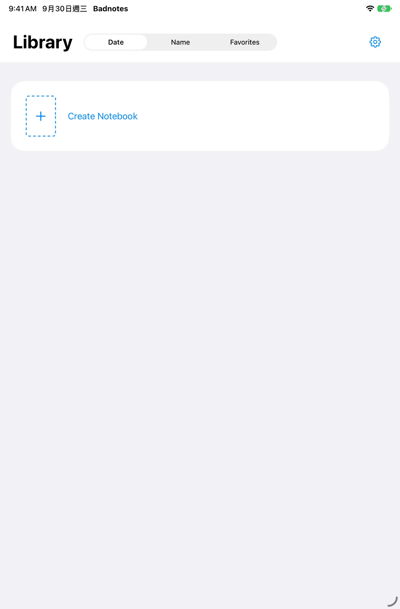

Make your mark.
Pens, highlighters and your own palette. Every thought starts with a stroke.
A QUIET NOTEBOOK FOR IPAD
Write. Sketch. Keep what matters.
Turn a pageMade for iPad · In private testing


LESS NOISE. MORE NOTEBOOK.
Familiar tools. An open page. A little space to think.
Pens, highlighters and your own palette. Every thought starts with a stroke.
Place a photo beside a sketch. Choose a paper color. Make the page your own.
Turn pages, reorder them, and keep favorite notebooks close.
Share a PDF or an image. Keep an editable backup for another day.
Illustrated pages, a little inspiration for yours.
FOR THE WAY YOU THINK
The things you notice. The ideas you chase. The words you want to remember.

A PLACE FOR EVERYTHING
Titles, covers, favorites. Your notebooks, with a place to come back to.
Actual Badnotes interface · iPadOS 27

PERSONAL, BY NATURE
No account to create. No feed to follow. Your notebooks stay on your device, and you choose what to share.
Our privacy promiseONE PAGE AT A TIME
Badnotes is currently in private testing.
Made for iPadOS 27 and Apple Pencil.
GitHub Issues are public. Please keep personal notes private.